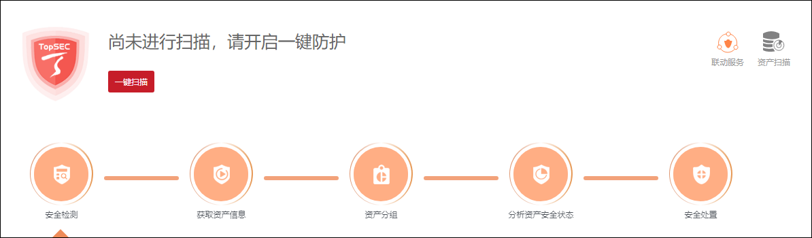
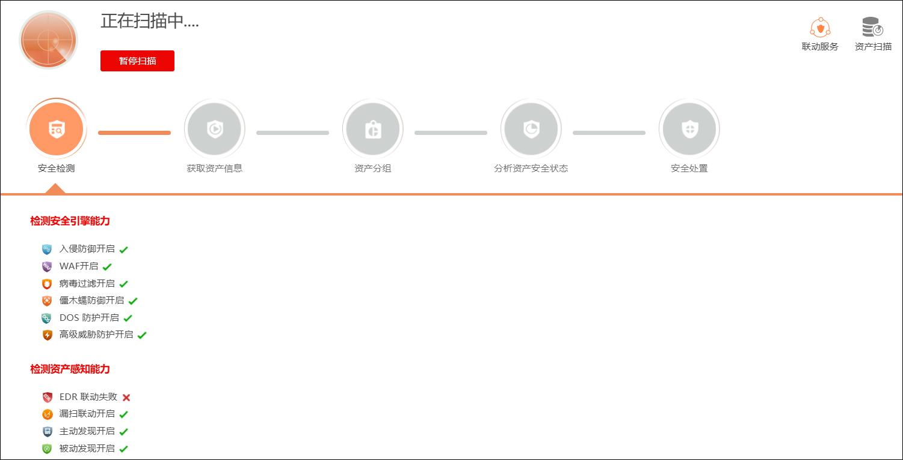
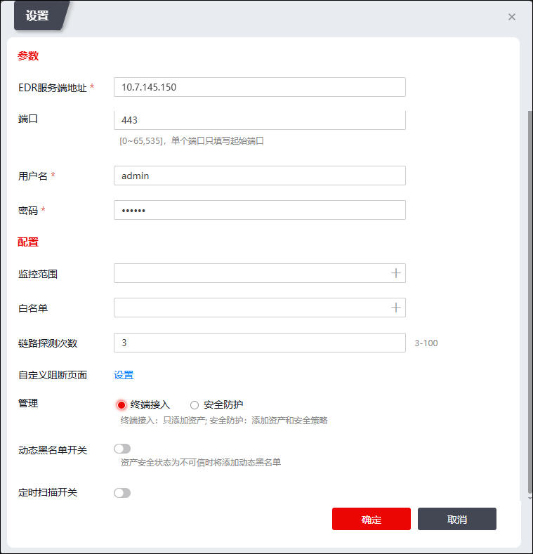
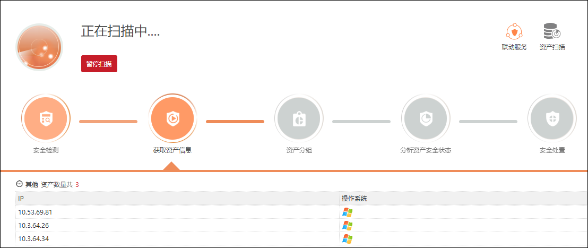
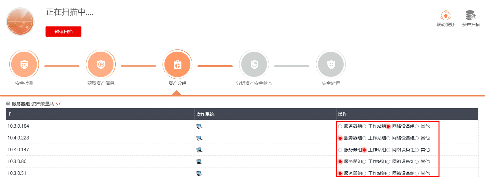
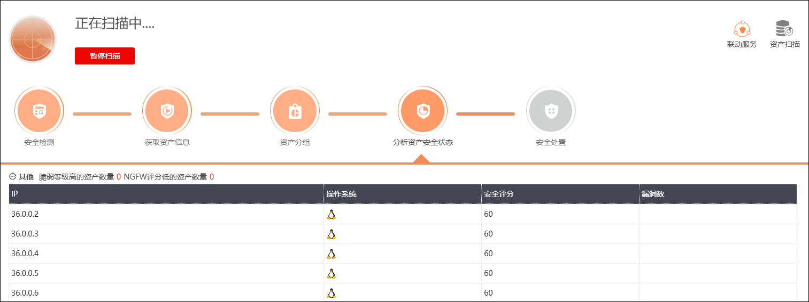
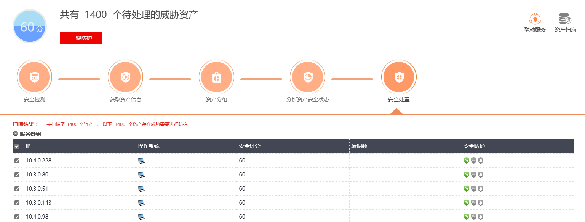
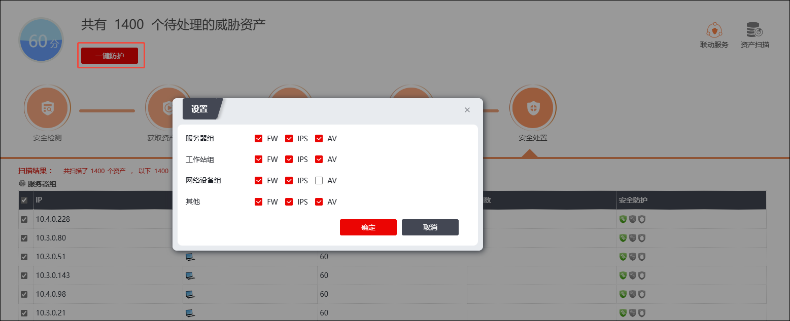
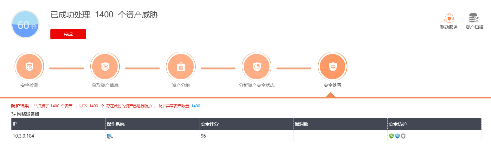

智能防护功能用于对资产进行安全扫描和安全防护，采用简易导航式配置向导模式，在相关联动和资产扫描配置完成的基础上，可实现用户单击几次鼠标操作即可自动化完成对威胁主机的扫描和防护。
智能防护扫描的整个自动化过程包括：
Ø安全检测：检测防火墙当前启用的安全引擎以及资产扫描相关配置是否配置完成。
Ø获取资产信息：获取EDR、漏扫、手动添加、被动资产发现和主动资产扫描等方式获取的资产信息。
Ø资产分组：防火墙根据服务器组、网络设备组、工作站组和其他等不同来源对资产进行预分组（这里用户可手工修改资产所属分组，分组决定针对该资产自动生成的ACL为指定源IP的ACL，还是指定目的IP的ACL）。
Ø分析资产安全状态：防火墙根据联动设备的扫描情况分析资产安全状态。
Ø安全处置：显示防火墙当前启用了哪些安全引擎对威胁资产进行防护。
扫描和防护威胁资产的具体操作步骤如下：

| 步骤1 | 选择 进入界面，如下图所示。 |

| 步骤2 | 点击【一键扫描】按钮，开始扫描防火墙设备当前启用的安全引擎及资产扫描配置情况，扫描完成后，“安全检测”图标下显示扫描结果，如下图所示。 |

未配置EDR联动和资产主动发现配置时，设备会提示待处理问题，点击“配置入口”可配置EDR联动和资产发现相关配置，如下图所示。
点击“配置入口”弹出EDR配置页面，如下图所示。

| 步骤3 | 安全检测完成后，获取资产信息，并在“获取资产信息”图标下展示已获取的资产信息，如下图所示。 |

|
²防火墙获取资产信息的数据来源于资产管理，资产管理的资产信息来自EDR、漏扫、手动添加、被动资产发现和主动资产扫描。 ²防火墙获取资产信息后会自动添加相关策略，即根据资产分组的不同添加仅引用源/目的访问控制策略、地址对象、资产等信息。 |
| 步骤4 | 获取资产信息完成后，可对资产预分组进行修改，在“资产分组”图标下可修改资产的分组情况，如下图所示。 |

在“操作列”可修改预分组情况。
|
²NGFW会对来自不同来源的资产进行预分组，主要为服务器组、网络设备组、工作站组和其他。智能防护页面支持重新对资产分组，各资产对应的操作栏，重新勾选新的分组，资产较多的情况的重新分组操作比较繁琐，我们可以在“资产管理”模块一次性选择多个资产进行重分组。 ²目前，资产的分组为服务器时，添加对应的访问控制策略引用目的地址对象，其余三个分组为对应访问控制策略引用源地址对象，如果我们将服务器组的资产重新分组为网络设备组、工作站组及其他时，对应的访问控制策略引用的地址对象会从目的变为源，而其余三个分组变更为服务器组时，对应的对应的访问控制策略引用的地址对象也会从源变为目的。 ²资产分组修改引起的策略修改是即时生效的。 |
| 步骤5 | 资产分组完成后，NGFW会根据联动设备的扫描情况分析资产安全状态，在“分析资产安全状态”图标下可查看资产安全情况，如下图所示。 |

| 步骤6 | 完成分析资产安全状态后，防火墙针对资产的威胁情况，自动启用防护该资产需要启用的安全引擎，并在“安全处置”图标下显示，如下图所示。 |

| 步骤7 | 扫描完成后，点击【一键防护】按钮，可在弹出的“设置”窗口中修改不同类型资产的安全引擎，如下图所示。 |

| 步骤8 | 点击【确定】，启用安全引擎防护威胁资产进程，完成如下图所示。 |
